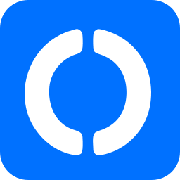
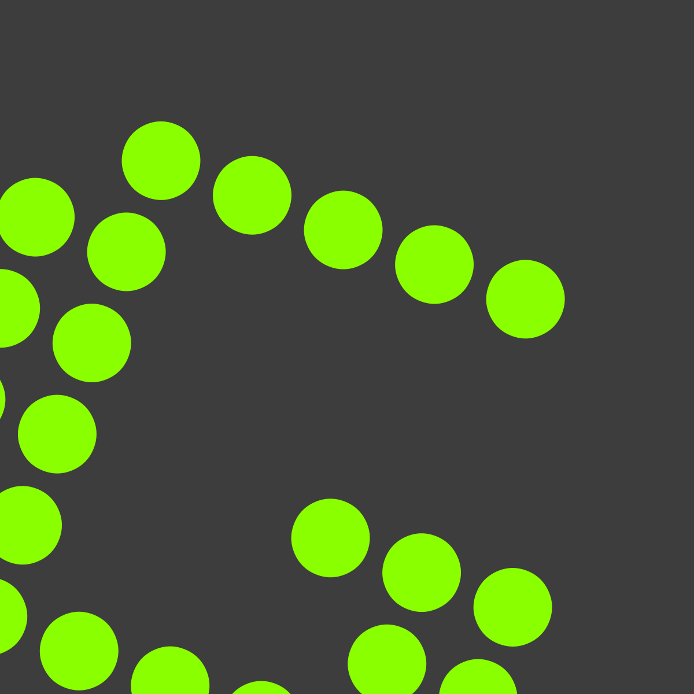

Productiviteit
Dit zijn programma's om je productiviteit hoger te maken.
Notepad++
Notepad++ is een goeie tekst editor. Het is gewoon notepad met veel meer functies. Daarbij is het ook FOSS. Je hebt ook Vim, Nano en Emacs voor linux. Deze zijn ook te gebruiken op windows (behalve Nano volgens mij). Veel mensen vinden VSCode ook fijn (FOSS).

Visual Studio Code
Visual studio Code (VS Code) is een text editor, om vooral te programmeren. Dus als je net zo'n nerd bent als Tom is dit zeker aan te raden 🙂. Ik gebruik het zelfs om deze website te maken!

OBS Studio
OBS is een manier hoe je video kan opnemen en streamen (met twitch bijvoorbeeld). Discord heeft ook OBS ingebouwd.

DeepL
DeepL is een translater net als google translate, maar is soms wat precieser. Installeren is onnodig, gebruik het gewoon in je browser.
Bitwarden
Bitwarden is een password manager en beveiligt en onthoud je wachtwoorden. Het is veel veiliger dan alles op te slaan in je browser en je kan synchroniseren naar andere pc's. Ze hebben ook een extension: deze voor chromium based browsers en deze voor firefox.

Thunderbird
Thunderbird is een mail client. Het is FOSS en gemaakt door mozilla (mozilla heeft ook firefox gemaakt). Het heeft veel features en je kan add-ons installeren net als firefox.
LibreOffice
LibreOffice (libre betekent gratis) is een FOSS office alternatief voor microsoft office. Het kan niet online (tenzij je plugins en allemaal random dingen gebruikt), maar heeft meer opties dan microsoft office en is gratis. Kan ook worden gebruikt op linux (of BSD).

Blender
Met Blender kan je 3D animaties maken. Er goed en ook FOSS.

GIMP, Paint.net en Krita
GIMP, paint.net en krita zijn paint, maar 871234% beter 🙂. Allemaal FOSS en hebben veel meer features dan microsoft paint. GIMP is vooral voor linux, maar is ook een van de beste op linux (misschien beetje moeilijk in het begin). Krita is vooral voor tekenen. Paint.net is gewoon paint met meer meuk.


RustDesk
Rustdesk is FOSS en werkt beter dan Anydesk heb ik gehoord. Dus als je geïntresseert was, probeer Rustdesk! Teamviewer is niet FOSS en niet aan te raden.
Kdenlive
Kdenlive is een FOSS video editor. DaVinci Resolve is ook zeer aan te raden, maar niet FOSS.


Greenshot
Greenshot is een FOSS screenshot tool om screenshots te maken. Het is makkelijk te gebruiken en heeft meer functies dan snipping tool van windows (win + shift + s).
